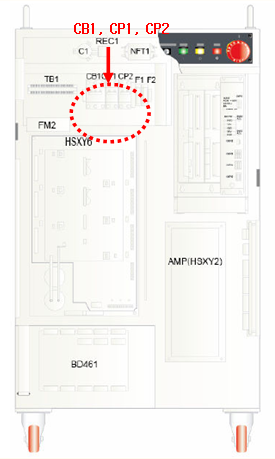

3.1. 개요
모터온도가 정상치 이상으로 상승하여 모터에 내장된 온도센서가 작동한 것입니다. 만약 모터온도가 상승되지 않았음에도 이 에러가 발생한다면 입력계통에 문제가 생긴 것입니다.
3.2. 원인 및 점검방법
|
1. 회로보호기를 확인하십시오. 2. TS입력신호를 무시하여 확인하십시오. 3. 브레이크 전원생성부의 전압을 확인하십시오. 3.1 시퀀스보드 또는 IO보드를 교체하십시오. 3.2 당 사에 문의하여 조치하십시오. |
1. 회로보호기를 확인하십시오.
회로보호기 차단에 의한 것일 수 있으니, 제어기 상단의 회로보호기가 차단되었는지 확인하고 이를 복구하십시오.

2. TS입력신호를 무시하여 확인하십시오.
TS입력신호를 무시하여 입력라인의 이상유무를 확인하십시오. TS입력신호 무시방법은 보수설명서의 시퀀스보드부를 참조하십시오.
3. 브레이크 전원생성부의 전압을 확인하십시오.
브레이크 전원생성부의 문제일 수 있습니다. 제어기 상단에 커패시터와 Rectifier가 설치되어 있습니다. 20V의 전원으로부터 DC24V의 전원을 생성합니다. 테스터를 사용하여 DC24V가 생성되고 있는지 확인하십시오.
계속적으로 문제가 해결되지 않을 경우에는 다음의 순서에 의하여 조치하십시오.
1) 시퀀스보드를 교체하십시오.
2) IO보드를 교체하십시오.
3) 당 사에 문의하여 조치하십시오